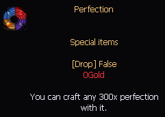
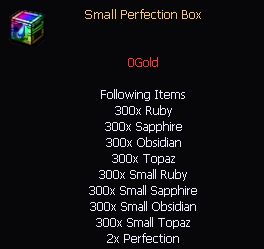
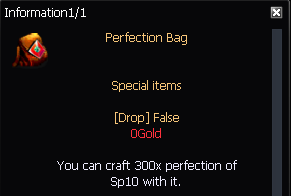
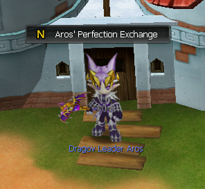
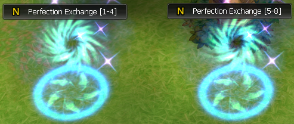
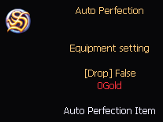

<div class="d-flex justify-content-center">
    <section class="sp-perfection">
        <h1 class="sp-perfection-title-1">SP Perfection</h1>

        <div class="sp-perfection-system">
            <h2 class="sp-perfection-title-2">Perfection System</h2>

            <h3 class="sp-perfection-title-3">Perfection Points</h3>
            <div class="perf-points">
                <ul>
                    <li class="sp-perfection-text">+1 Attack Perfection Point = +10 Attack</li>
                    <li class="sp-perfection-text">+1 Defence Perfection Point = +10 Defence</li>
                    <li class="sp-perfection-text">+1 Element Perfection Point = +1 Element</li>
                    <li class="sp-perfection-text">+1 HP/MP Perfection Point = +100 HP/MP</li>
                </ul>
            </div>

            <h3 class="sp-perfection-title-3">For <b>SP1</b> to <b>8</b></h3>
            <div class="sp1-to-8">
                <p class="sp-perfection-text">You can get Perfections from Maru raid boxes or Family Tower NPC</p>
                
            </div>
            <div class="sp1-to-8">
                <p class="sp-perfection-text">You can fish these boxes</p>
                <div class="perf-boxes">
                    
                    
                </div>
            </div>
            <div class="sp9">
                <h3 class="sp-perfection-title-3">For <b>SP9</b> and <b>5MA</b></h3>
                <p class="sp-perfection-text">You can get Jewels Bags on Paimon raid boxes</p>
                
            </div>
            <div class="sp9">
                <h3 class="sp-perfection-title-3">For <b>SP10</b> and <b>6MA</b></h3>
                <p class="sp-perfection-text">You can get Perfection Bags on prestige 5</p>
                
            </div>

            <h3 class="sp-perfection-title-3">
                Once you got some Perfections or Jewels Bags, you can trade them for the stones you want :
            </h3>
            <div class="perf-trades">
                <div class="perf-trade">
                    <h3 class="sp-perfection-title-3">For SP1 to 8</h3>
                    
                </div>
                <div class="perf-trade">
                    <h3 class="sp-perfection-title-3">For SP9 and 5MA</h3>
                    
                </div>
                <div class="perf-trade">
                    <h3 class="sp-perfection-title-3">For SP10 and 6MA</h3>
                    
                </div>
            </div>

            <h3 class="sp-perfection-title-3">
                You can also trade your stones to Perfections and Jewels Bags :
            </h3>
            <div class="perf-trades">
                <div class="perf-trade">
                    <h3 class="sp-perfection-title-3">For SP1 to 8</h3>
                    
                </div>
                <div class="perf-trade">
                    <h3 class="sp-perfection-title-3">For SP9 and 5MA</h3>
                    
                </div>
            </div>

            <h2 class="sp-perfection-title-2">Auto Perfection Item</h2>
            <p class="sp-perfection-text">
                You can buy this item at auto perf npc for 3.750kk Gold. Let this item in your inventory and everytime
                you will perf a SP, it will take all stones available in your inventory to reach the maximum
                perfection Lv so you don't have try one by one until +100.
            </p>
            <div class="auto-perf">
                <div class="d-flex justify-content-center">
                    
                </div>
                <div class="d-flex justify-content-center">
                    
                </div>
            </div>
        </div>
    </section>
</div>